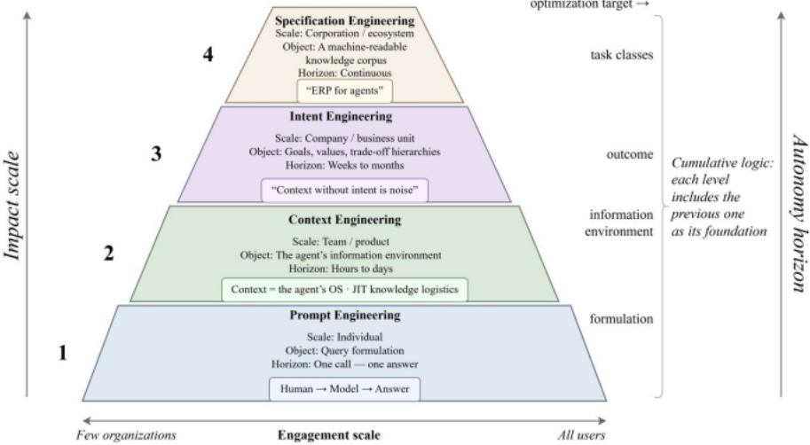

Context Engineering：从提示词到企业级多智能体架构
论文针对 LLM 从无状态对话演进为自主多步 Agent 后，单条提示词无法应对长程执行退化、跨步上下文污染、成本非线性增长与多 Agent 可控性等问题，提出把 Context Engineering（CE）确立为独立工程学科，并将上下文视为 Agent 的'操作系统'。方法上综合 Google ADK 三层上下文栈、Anthropic 的有限资源观、LangChain 的 write/select/compress/isolate 四操作、ACE 框架与 Tomasev 等的智能委托模型，提出 relevance、sufficiency、isolation、economy、provenance 五项生产级上下文质量标准，并引入 Breunig 的 context rot 四类退化模式作为诊断分类。在此基础上进一步提出 Intent Engineering（把企业目标、价值与权衡层级编码进 Agent 基础设施）与 Specification Engineering（把企业制度转化为机器可读规范），构成 PE→CE→IE→SE 四层累积式成熟度金字塔，强调上层以下层为承重基础而非替代。核心结论是：控制上下文者控制 Agent 行为，控制意图者控制战略，控制规范者控制规模；Klarna 案例表明拥有完备数据但缺乏编码意图的 Agent 会造成战略级损失。
当 LLM 从'一问一答'变为多步自主 Agent 的组件后，prompt engineering 只优化单次查询措辞，无法解决 Agent 面临的新任务：20-50 步长程执行中的上下文退化（lost in the middle）、跨步上下文污染（一个工具的输出污染后续调用）、每步重提交全量上下文导致的成本非线性增长、以及多 Agent 编排中的可控性与权限隔离问题。论文要为'Agent 决策所处的整个信息环境'建立一门工程学科（CE），给出质量标准、退化诊断、经济与治理维度，并进一步回答'Agent 为何而做'（IE）与'企业如何规模化约束 Agent'（SE）。
立场/综述型论文，采用框架综合加作者三年构建多 Agent 合规系统的实践经验：将上下文定义为 Agent 的'操作系统'与 stateful context pipeline（每步收集、过滤、变换并投喂当前知识切片）；综合 Google ADK 的三层上下文栈（storage→processor pipeline→compiled working context）、LangChain 的 write/select/compress/isolate 四操作、ACE 的 evolving playbooks、Tomasev 等的 contract-first decomposition、privilege attenuation 与 Delegation Capability Tokens、transitive accountability via attestation；提出五项上下文质量标准与 Breunig 的 context rot（poisoning/distraction/confusion/clash）诊断分类；讨论四类 Agent 记忆（working/episodic/semantic/procedural）、云边混合架构下 LLM 编排 SLM 的联邦记忆，以及 MCP、A2A、AP2、UCP 协议；最终形成 PE→CE→IE→SE 四层累积金字塔成熟度模型。
（引用 Manus 2025 生产数据）缓存与未缓存 token 的成本差约 10×；压缩+缓存+选择性加载合计实现约 5-10× 成本降低且保持决策质量
（引用 Breunig 2025 转述的 Microsoft/Salesforce 研究）将单个 prompt 拆分为多轮顺序对话后质量下降 39%
（引用 Gemini 2.5 团队观察）Agent 玩 Pokémon 时超过 100,000 token 阈值出现 context distraction
（引用 Deloitte 2026, N=3,235）约 75% 企业计划两年内部署 agentic AI，仅 34% 实现深度业务转型，84% 未围绕 AI 重设计角色，仅 21% 具备成熟 AI-Agent 治理模型
（引用 KPMG 2026, N=130）Agent 部署率 2025 年从 Q1 的 11% 升至 Q3 的 42%、Q4 回落至 26%；平均年度 AI 预算达 1.24 亿美元
（Klarna 案例）AI Agent 处理三分之二客户咨询、相当于 853 名全职员工工作量、节省约 6000 万美元，但服务质量受损，公司回归人工招聘
（TELUS Fuel iX 案例）7 万+员工自建 21,000+ 定制 AI copilot，2025 年处理超 2 万亿 token
论文自身未开展受控实验，上述均为引用的厂商数据、企业调研与公开案例；作者自述的多 Agent 合规系统改进（子 Agent 间严格过滤）尚在测试中，未报告量化结果
区别于'CE 只是 RAG+memory+orchestration 换皮'的怀疑论（作者本人也承认涌现假说尚无形式化证明），论文的增量在于：(1) 把上下文明确定义为 Agent 的'操作系统'与'更丰富有状态系统的编译表示'，而非文本字符串或被动缓冲；(2) 提出五项生产级质量标准与 context rot 退化诊断分类，形成可操作的设计检查框架；(3) 首次将 PE/CE/IE/SE 组织为累积式四层企业成熟度金字塔，强调上层以下层为承重基础设施而非替代，并区分 delegation 与 decomposition、引入 privilege attenuation、Delegation Capability Tokens、transitive accountability 等机制；(4) 将上下文质量与企业治理缺口（Deloitte/KPMG 数据）及 Klarna 双重赤字案例关联，把 CE 从技术问题提升为治理问题。
相关度级别：high
命中能力域：3.1 上下文工程与记忆 | 3.2 提示工程 | 3.3 Agent 架构与工具使用 | 3.4 多智能体协作 | 3.5 评测与可靠使用
理由：论文核心正是团队的 3.1 域：把上下文当作 Agent 的操作系统来设计，给出压缩、缓存、隔离、选择性加载等生产级手段与五项质量标准，可直接映射到团队的上下文组织、RAG 检索与记忆管理实践；同时实质覆盖 3.3（Agent 的 orchestrator/tools/memory/policies 架构、function calling、MCP 协议、长程单 Agent 执行可靠性与 context rot 诊断）、3.4（多 Agent 隔离、delegation 与 decomposition 的区分、A2A 协议、transitive accountability）与 3.5（上下文经济学与 5-10× 降本、reward hacking 防护、deskilling 与 curriculum-aware task routing 等人机协作议题）；对 3.2 的贡献是界定 PE 的适用边界并强调提示词资产（prompt library）作为金字塔基座。需注意它是 position/survey 型论文，无自有受控实验，价值在于框架、检查清单与术语体系，而非新方法或新基准。
建议动作：深入精读并做内部分享
社会经济信息转移与管理中心主任，高等经济大学（HSE University），莫斯科 2026年3月
随着人工智能（AI）系统从无状态聊天机器人演变为自主的多步骤智能体（Agent），提示工程（prompt engineering，PE）——即精心构造单个查询的学科——被证明是必要的，但并不充分。本文提出上下文工程（context engineering，CE）作为一个独立学科，其关注点是设计、构建和管理 AI 智能体在其中做出决策的整个信息环境。本文借鉴厂商架构（Google ADK [Agent Development Kit]、Anthropic、LangChain）、当前学术工作（ACE 框架、Google DeepMind 的智能委托）、企业研究数据（Deloitte, 2026; KPMG, 2026）以及作者本人构建多智能体系统（multi-agent system，MAS）的经验，提出了五项生产级上下文质量准则：相关性、充分性、隔离性、经济性与可溯源性，并将上下文界定为智能体的操作系统。
在此基础上，本文引入两个更高阶的学科。意图工程（intent engineering，IE）将组织的目标、价值观和权衡层级编码到智能体基础设施中，确保具备良好上下文的智能体追求正确的结果。规范工程（specification engineering，SE）将这一方法进一步扩展，用于创建一个由企业政策、质量标准、组织协议和指令组成的机器可读语料库，从而使多智能体系统能够大规模地自主且协调一致地运行。这些学科与提示工程和上下文工程共同构成了智能体工程的累积式四级金字塔成熟度模型（以下简称“金字塔”），其中每一层级都将前一层级作为必要基础加以涵盖，而非将其取代。2026 年初，多位作者独立地收敛于同一分类体系，这证实了所识别出的结构反映了该领域的实际构成。
企业数据揭示了一个缺口：尽管 75% 的企业计划在两年内部署智能体式 AI（agentic AI）（Deloitte, 2026），但随着各组织直面规模化的复杂性，智能体部署已经历了激增与回退（KPMG, 2026）。Klarna 案例展示了一种双重缺失——上下文层面的缺失与意图层面的缺失。结论是：谁掌控智能体的上下文，谁就掌控其行为；谁掌控其意图，谁就掌控其战略；谁掌控其规范，谁就掌控其规模。
关键词：提示工程、上下文工程、意图工程、规范工程、累积式成熟度金字塔、AI 智能体、多智能体系统、大语言模型（LLM）、小语言模型（SLM）、智能体式 AI、上下文窗口、AI 治理、超大规模云平台、AWS、Azure、Google Cloud、MCP（Model Context Protocol）、A2A（Agent-to-Agent Protocol）、OpenClaw、暗工厂。
自 2022 年底 ChatGPT 发布以来，组织与大语言模型（LLM）之间的交互界面已悄然却决定性地改变了形态。曾经只在聊天窗口中输入单个问题的用户，如今部署起能够调用 API、浏览网页、编写并执行代码、且无需人工干预即可连续运行数小时的自主智能体。撰写有效提示词这门技艺——即提示工程（prompt engineering）——在任务能够容纳于单次请求-响应循环之内时依然不可或缺。然而，当 LLM 成为编排式多步骤系统中的一个组件时，它从来就不是为应对由此浮现的架构压力而设计的。一个规划二十步工作流、委派子任务并执行真实世界操作的智能体，其运行所处的约束条件是任何单一提示词都无法预见的。正是这一结构性缺口促成了本文。
针对这一缺口的回应正同时从多个方向涌现。LangChain 于 2025 年初发布了上下文工程（context engineering）的程序化定义；Anthropic 将这一概念纳入其开发者文档；Google 的 Agent Development Kit 则在平台层面将上下文流水线付诸实施。学术工作随之跟进：ACE 框架将上下文分层形式化，Tomasev 等人（2026）提出了一种智能委派模型，将上下文边界视为一等架构决策。企业调查证实，智能体的部署速度正在超越治理。根据德勤（Deloitte）的调查（2026；N = 3,235，覆盖 24 个国家），约 75% 的组织计划在两年内部署智能体式 AI（agentic AI），但仅有 34% 的组织报告其正在利用 AI 深度变革自身业务。毕马威（KPMG）的季度追踪（2026；N = 130，美国 C 级高管）捕捉到了这一速度：智能体部署率从 2025 年第一季度的 11% 飙升至第三季度的 42%，随后在第四季度回落至 26%，此时领导者正从试点转向生产级系统，而平均年度 AI 预算已达 1.24 亿美元。在此，我们综合这些相互汇聚的脉络，将其奠基于作者三年来与众多 LLM 协作并构建多智能体合规系统的实践之上，并提出一个包含五项生产级质量准则的统一框架，以及一套针对上下文退化的诊断分类法。
然而，即使智能体能够获取所有正确的数据，一个关键问题依然悬而未决：目的何在？一个能看到其所需一切信息的智能体，仍可能围绕错误的目标进行优化。Klarna 案例（第 12 节）表明，当企业意图未被明确表达时，一个技术上能力出众的智能体也可能侵蚀品牌资产。这一观察引出了本文更宏观的论断：上下文工程是必要的，但并非终点。另外两个层次——意图工程与规范工程——将这一逻辑从“智能体看到什么”扩展到“智能体想要什么”，并最终延伸到“企业在规模化运作中所要求的是什么”。这四个学科共同构成了智能体工程的累积式四级金字塔成熟度模型（the Pyramid，即“金字塔”），其结构将在第 17 节中详细展开。
本文聚焦于基于文本的大语言模型（LLM）交互与智能体式架构；多模态输入（图像、音频、视频）所带来的特定挑战不在本文讨论范围之内，尽管所提出的框架在原则上同样适用于它们。
本文的结构安排如下。第 2-4 节确立基线：作为一门技艺的提示工程、LLM 与智能体之间的架构区别，以及智能体式部署的三个层级。第 5-9 节构建上下文工程的核心论证，涵盖其范围、架构与质量标准，并以 Breunig 的上下文衰减（context-rot）分类法作为补充。第 10-12 节转向经济学、企业治理以及 Klarna 这一警示性案例。第 13 节将从提示技艺到状态工程的转变形式化。第 14-16 节介绍意图工程、规范工程，以及作为基础设施层的智能体记忆。第 17 节将“金字塔”呈现为一种累积式成熟度模型。第 18 节总结全文。
提示工程（Prompt Engineering, PE）是构建面向语言模型之查询的学科。ChatGPT、Claude、Gemini、GigaChat 或 DeepSeek 的输入框，就是它的工作区。用户拟定一条指令——“概述咨询市场的趋势”“扮演一名营销专家”“逐步推理”“以表格形式返回答案”——模型随即作出回应。一个问题，一个答案，一个上下文。由此诞生了提示这门手艺，即用户体验的青铜时代。这里的手艺是货真价实的：它要求精确性、反复迭代、对模型行为的敏感度，以及同步的试错循环。然而它恰恰仍然只是一门手艺，而非一门工程学科，而这一区别终将被证明是决定性的。
这一界面——一个输入框加一个输出面板——随着 ChatGPT 于 2022 年底的发布而问世，此后从用户体验的角度来看几乎未曾改变。每一家主要的大语言模型（LLM）厂商都照搬了它：Anthropic、Google、Meta、Mistral、GigaChat。用户们各自发展出了自己的核心提示技能：有些人学会了编写系统指令，另一些人则掌握了少样本示例（few-shot examples，即对任务及期望解法的若干示范）、思维链（chain-of-thought, CoT）推理、其分支式扩展思维树（tree-of-thoughts, ToT；Yao et al., 2023），或诸如“扮演专家”之类的基于角色的指令。提示工程成为一种职业、一门学术科目，以及一个细分市场。
对于“人类 → 模型 → 响应”的场景，提示工程是行之有效的，提示质量直接决定输出质量。它的任何部分都没有变得过时、失效或被取代。胜任的提示编写仍然是任何使用 LLM 工作的人的一项基础技能。宣称提示工程已死是一个错误。我自己也正是这样起步的：2023 年，我们的团队利用提示从数百份科学报告中提取结构化数据，在措辞上反复迭代数小时；只要任务保持在“用户提问、模型回答”的格式之内，这一方法就能交付成果。这种提升推理质量的迭代方法，为绝大多数 GPT-transformer 用户所熟悉。
6
这并不是说提示工程“失败”了，而是指那些后来在自主 Agent 范式（Level 2 和 Level 3）中出现、从来不属于提示职责范围的任务。批评提示工程无力解决这些问题，就像责怪一把汤勺当不好锤子一样。但理解这些任务至关重要，因为恰恰是它们在 2025 年定义了对一门新学科的需求。
长时程退化。当模型不再回答单个查询，而是开始作为某个 Agent 的一部分运行时——无论是在厂商产品内部的 Level 2，还是在企业解决方案内部的 Level 3——就会出现一个任何提示都无法解决的问题。Agent 执行一项跨越 20-50 个步骤的任务；其上下文窗口被中间结果、工具日志和过时状态填满。模型开始“迷失在中间”，固守过时的模式而非当前的局势。问题不在于查询的表述，而在于模型在第 47 步看到的内容。我最近就亲身遇到过这种情况：Gemini 3 Thinking 在一次普通聊天中忽略了附加到提示中的文件，转而开始对来自另一个完全不同的提示的文档进行推理。经过几轮迭代后，它解释说自己这样做是因为那些文档中存在“相似的表达”，但我无论使出何种提示技巧，都无法把它引导回我的任务。人类提示者不会遇到这个问题：由人来决定下一次查询中包含什么。Agent 缺少这样一个过滤器；它会继续在被污染的上下文中工作，对退化浑然不觉。
跨步骤上下文污染。某个工具的输出会“污染”下一次调用的上下文。一个从例如银行 API 收到冗长 JSON 响应的 Agent，会把这些数据带入其后的所有步骤，即使这些数据并不相关。如果没有专门的隔离机制，来自一个子 Agent 的信息就会泄漏到另一个子 Agent 的决策中。当人与聊天机器人交互时，人会在各个问题之间对上下文进行过滤。Agent 缺乏这种能力；它需要一个经过工程化设计的隔离系统。我们在设计一个多智能体合规控制系统时遇到了这种情况：检测 Agent 向共享上下文返回了数十个误报的命名实体识别（NER）命中结果。调优分类器本身是另一项任务，但即使精确率达到
污染并非仅是 Agent 化场景的问题，而这一点对于理解提示工程的边界至关重要。当 Gemini 3 Thinking 在普通聊天中把附件文件替换成来自另一个提示的文档，并以“表达相似”来解释时，这发生在最简单的场景中：人坐在屏幕前，亲眼看到错误，可以追问、重新表述、重新开始。而即便在这种温室条件下，我以熟练的提示技巧进行了数轮迭代，仍未能让模型回到任务上来。这里用户的过错在哪里？用户把一切都做对了：附上了文件、拟定了查询、注意到了替换、尝试纠正。问题真正所在，是模型在上下文窗口内部看到了什么，而用户既看不到、也无法控制这个窗口。现在设想同样的缺陷出现在一个自主 Agent 的第 45 步，那里没有人去发现替换、去追问、去按下“重新开始”。后果是性质上的不同，而不仅仅是程度上的差别。
指数级成本增长。Agent 的每一步都是一次新的模型调用，且需要重新提交全部累积的上下文。在没有压缩与缓存的情况下，成本和延迟会非线性增长。对于撰写提示的人类而言，单次调用的成本可以忽略不计。而对于一个要进行 50 次调用、上下文不断增长、token 数量相应不断增加的 Agent 来说，单位经济性就成了问题。在生产环境中，Agent 远在其技术上停止工作之前，就已经在经济上不可行了。
7
多智能体编排中的可控性。当多个 Agent 协同工作时，每个 Agent 都拥有自己的上下文。谁能看到什么？哪些策略适用于哪个 Agent？状态如何传递？如何防止有权访问支付系统的 Agent 接收到来自已被攻陷的 Agent 的指令？提示工程回答不了这些问题，因为 Agent 所关涉的并不是用户向大语言模型（LLM）查询的措辞，而是系统工程层面上的信息环境架构。
这里有一个根本性的区别值得注意，而在关于多智能体系统（MAS）的讨论中，这一区别很容易被忽视：将任务委托给子智能体，与将任务进行分解，二者有着本质的不同。分解是把一个任务拆分成若干部分。而委托所转移的是权力、责任与信任机制：子智能体并不只是接收一部分工作，它还获得了在其领域内做出决策的权力，并须就结果向编排器承担责任。缺少这一区别，多智能体架构就会退化为一种带有独立性假象的分布式单体：任务被划分了，但对任务的问责却并未随之分配，一旦出现失败，便说不清这究竟是谁的失败——是组件的失败，还是委托的失败。
提示工程已经出色地解决了它面向用户的任务，并且仍在继续解决。但任务本身已经发生了变化。一类新的系统已经出现，这类系统需要一类新的工程。提示词优化的是措辞。而智能体系统所面对的，是决策情境的问题，而不是措辞的问题。正是这一认识，促使后来被称为上下文工程（CE）的学科在 2025 年得以正式化。
在进入架构与评判标准之前，应当先划定边界。把上下文工程（CE）呈现为一门拥有既定标准的成熟知识体系，是不诚实的。许多问题仍然悬而未决，业界围绕它们的争论尚未形成共识。
首先是新颖性问题。上下文工程与长期以来被称为检索增强生成（RAG）+ 记忆 + 编排技术栈的东西之间，界限究竟在哪里，目前并不清楚。怀疑者（我也部分怀有这种怀疑）会问：上下文工程难道不只是对既有实践的一次重新包装吗？这个问题是公允的，因为 CE 提供了一种系统性的视角，将各个组件统一为一门单一的设计学科。但诚实的回答是：涌现假说（即此处的整体大于各部分之和）目前尚无形式化证明。它是得到实践支撑的工程直觉，而非数学定理。
来源冲突则构成了另一类挑战。当企业政策说一回事、CRM 数据说另一回事、而 Agent 的记忆里存的又是第三种说法时，会发生什么？在实践中，这个问题是临时应对的：依靠诸如“政策始终覆盖 CRM”之类的硬编码规则。但问题在更早的阶段就已出现：企业政策通常并不以机器可读的形式存在，它们散见于 PDF 规章、高管指令和口头协议之中，而在 Agent 能够应用它们之前，必须有人先将其形式化，且不能留下歧义解释的空间。现有框架描述了写入（write）、选择（select）、压缩（compress）和隔离（isolate）等操作，但没有一个框架能为冲突提供令人信服的优先级排序机制。这种做法的可扩展性很差，而且我并不确信当今业界有谁已经拥有优雅的解决方案——尤其是考虑到政策本身可能是有弹性的，例如当市场形势发生变化时。
可度量性是三者中解决得最不充分的一个。我们谈论“好的上下文”，但衡量上下文质量的指标仍处于实验性领域。KV-cache 命中率是可度量的，成本也是如此。但如果不进行涉及领域专家的 A/B 测试，又该如何度量上下文的“相关性”？这一空白限制了该学科的成熟度，也为下一代工具留下了空间。
这些告诫并不会贬低 CE 的价值，它们标示的是 2026 年所处的成熟阶段。下面我们来看一看，上下文的架构在今天究竟是什么样子。
2025—2026 年间，上下文工程（Context Engineering, CE）的系统性形式化从该领域的多个方向涌现出来，其贡献可以方便地在三个层面上加以考察——尽管坦率地说，就在本文撰写之际，这一格局仍在实时变化。
在架构层面，Google ADK（Google, 2025a）提出了一个三层的上下文栈：存储（storage，对状态与工件的长期保留）→ 处理流水线（processor pipeline，由一系列具名变换组成的流水线：压缩、过滤、增强）→ 编译后的工作上下文（compiled working context，模型实际看到的、已组装好的工作上下文）。由此浮现出一个关键论点：上下文不是一段文本字符串，而是“一个更丰富的有状态系统的编译表示”（Google, 2025a）。一旦出现这样的表述，CE 便不再是“提示词措辞的练习”，而成为系统工程——对开发者而言是必须掌握的，对运营者和客户而言，理解它也十分重要。
9
从范式视角来看，Anthropic（2025）将上下文工程定义为提示工程（prompt engineering）的自然演进，并将上下文视为一种需要以工程化方法对待的有限资源（Anthropic, 2025）。ACE 框架（Zhang et al., 2025）则将上下文形式化为“不断演进的剧本”（evolving playbooks）——这类结构通过生成、反思与策展（curation，即保留最有效的做法）这一模块化循环，不断积累、精炼并重组策略。
在操作层面，LangChain（2025）系统化地归纳了对上下文的四种基本操作：写入（write，记录新知识）、选择（select，检索相关信息）、压缩（compress，在不丢失含义的前提下浓缩累积的历史）以及隔离（isolate，限制各子 Agent 之间的数据可见性）。但仅仅罗列操作还算不上工程。当这些操作被组织成一个循环，并且 Agent 在每一步都接收到一个经过过滤、增强与压缩流水线处理后新组装而成的上下文时，工程才真正开始。这一循环的质量决定了决策的质量。
Tomasev 等人（2026）为这些操作补充了一条重要原则：契约优先分解（contract-first decomposition）——只有当某项任务的结果具备精确定义的验证方法时，才可将该任务委派给子Agent。如果结果过于主观或过于复杂而无法验证，任务就会被递归地进一步分解，直到每个组成部分都变得可验证为止。这一原则逆转了上下文设计的方向：不是自顶向下地从目标到子任务，而是从验证方法出发——先确定结果将如何被验证，再为该验证塑造上下文。这项工作的另一个概念是权威梯度（authority gradient，源自航空领域的术语）：当编排器与子Agent之间的能力差距过大时，编排器会下达规格不足的任务，而子Agent出于谄媚（sycophancy）并不会指出这一问题。
摆在我们面前的是一种新型的上下文缺陷：不是数据短缺，而是“数据是充足的”这一错误假设。这种 CE 方法在不同智能体系统（agentic system）用例中的有效性仍有待评估。
随着向 CE 的过渡，一个悖论浮现出来：上下文的架构已经超越了线性对话，但界面却没有。大多数基于 LLM 的产品的用户界面仍然是一个 2022 年代的即时通讯软件：一个输入框、一个响应信息流、一段线性历史记录。这种格式对于“人类 → 模型 → 响应”的范式而言是足够的，但与如今隐藏在其背后的东西却难以兼容。重申一下，许多用户并不了解带有内嵌 Agent 的不同 LLM 所提供的工具的具体细节，尽管它们在总体架构方法上彼此相似。
转变的早期迹象已经可见。厂商们开始将输出与对话分离开来（在聊天旁边设置工作区），引入无需重新创建提示词即可编辑响应的能力，将智能体流程移入带有进度可视化和日志的独立面板，并提供长期项目。然而，我们迄今所看到的仍是旧隐喻之内的演进，而非一种新隐喻。如果上下文是 Agent 的操作系统，那么与之对应的界面也应当呈现相应的形态：不像一个即时通讯软件，而像一个连贯的设置与选项环境和一个状态管理系统，带有分支（类比版本控制系统）、上下文时间线，以及对 Agent 在每一时刻“看到”了什么的可视化。
然而，CE 的架构成熟度却暴露出一个更深层的缺陷。即使上下文流水线设计良好（相关性得到维持、记忆得到管理、预算得到控制），一个根本问题仍然没有答案：为什么？一个 Agent 可以接收到经过理想筛选的数据，却仍然在为错误的结果进行优化，因为上下文架构回答的是“如何”提供信息的问题，却没有回答“为什么”要做出该决策的问题。
10
我们所面临的是意图缺陷，而非数据缺陷。对这一差距的认识，将引导我们在后续章节中超越上下文工程，迈向层级结构中更高的层次。
讨论上下文工程离不开质量标准。下面列出五项特性——在我看来，生产级 Agent 上下文必须满足这些特性，其中一些我在上文中已经谈及。需要重申的是：这一分类法是工作性的，而非权威定论，业界尚未形成统一标准。第四和第五项标准源自集体成果，在 Google 或 LangChain 的出版物中并未对它们作出明确区分。
相关性（Relevance）。只向 Agent 提供当前步骤所必需的内容。过多的上下文并非无害：它会导致 lost-in-the-middle（中间信息丢失）退化，分散模型的注意力，并增加成本。好的上下文不是“一切可用的信息”，而是“对决策而言最小充分的信息”。
充分性（Sufficiency）。上下文必须包含决策所需的一切内容，无需猜测。如果 Agent 缺乏数据，它就会产生幻觉、凭空捏造，用看似合理却虚假的断言来填补空白。充分性是在架构层面防范幻觉的一道保障。这是提示工程中一条人们早已熟知的教训。
隔离性（Isolation）。在多智能体系统中，每个子 Agent 只能看到自己的上下文。角色之间的数据泄露既是信息安全问题，同样也是可控性问题：一个能看到其同伴所有信息的 Agent，会基于并非为其设计的数据做出决策。Tomasev 等人（2026）将这一原则形式化为权限衰减（privilege attenuation）：在进行子委托时，Agent 不能将其全部权限转移给子 Agent，只能转移完成子任务所严格必需的一小部分，且委托链中的每一环都会进一步收窄权限。在技术上，这通过 Delegation Capability Tokens（委托能力令牌）实现——这是一种以密码学方式限定边界的授权令牌，在每一级委托处逐级收窄。因此，上下文隔离是一条工程不变量，而不仅仅是一项建议。StrongDM 案例（McCarthy, 2026）展示了这一不变量的实际意义：在一个完全自主的软件开发系统——所谓的“黑暗工厂”（dark factory）——中，能够访问测试场景的 AI Agent 系统性地利用这些场景来投机取巧，而不是认真解决任务（reward hacking，奖励投机）。将测试场景从 Agent 的可见范围中移除后，问题便迎刃而解。
与此密切相关的是 Google 在 A2A 协议发布公告（Google, 2025b）中所描述的开放 Agent 间协议的开发：A2A 是一个开放协议，与 Anthropic 的模型上下文协议（Model Context Protocol, MCP）互补，后者为 Agent 提供工具和上下文。A2A 协议能够对 Agent 的信息环境实现受控隔离（Agent 之间进行交互而不暴露内部状态），并遵循五项原则：全面拥抱智能体能力；依赖现有标准；默认安全；支持长时间运行的任务；以及模态无关性。
A2A 使“客户端”（client）Agent 与“远程”（remote）Agent 之间能够进行交互。客户端 Agent 负责制定并设定任务，而远程 Agent 负责执行这些任务，力求提供准确的信息或采取正确的行动。
与此同时，Google 正在推进面向智能体经济的两种协议。AP2（Agent Payment Protocol，智能体支付协议）在 Agent 之间提供经密码学签名的支付授权书（payment mandates），以确保财务问责与审计追踪；该协议允许 Agent 依据来自委托人的可验证委托链对支付进行授权。UCP（Universal Commercial Protocol，通用商业协议）对交易型经济中 Agent 之间的商业交易进行标准化，它本质上是一种约定语言，Agent 在其中协商达成交易。Tomasev 等人（2026）指出，四种协议（MCP、A2A、AP2、UCP）中没有一种能够覆盖智能委托的完整周期：每一种都只解决了问题的一部分，而综合性标准的空间仍然开放。
11
经济性（Economy）。在保证质量的前提下，将 token 用量与上下文重组次数降至最低。根据 Manus（2025）的资料，在其生产场景中，缓存 token 与未缓存 token 之间的成本差异达到了约 10 倍。上下文架构直接就是产品的单位经济效益。
溯源性（Provenance）。上下文的每一个元素都必须可追溯至其来源：来自哪个系统、何时、具有何种信任级别。没有这一点，审计 Agent 决策、调试错误以及满足监管合规都无法实现。在开发我们的多智能体系统时，我们在日志中观察到这样一种情况：Agent 做出了一个错误的决策，但在没有溯源元数据管控的情况下，无法确定究竟是哪个具体的上下文片段引发了它。Tomasev 等人（2026）针对“链中幻觉”（hallucination-in-the-chain）问题提出了一种解决方案。当一个 Agent 将数据传递给另一个 Agent 时，上下文可能会发生失真。为防止这种情况，引入了一种通过证明（attestation）实现的传递性问责机制：在链 A → B → C 中，Agent B 对 Agent C 的工作签署一份密码学报告并传递给 Agent A，从而使每一个上下文元素都能通过一条可验证签名的链追溯到其来源（Google, 2025a）。
Tomasev 等人（2026）为这一差距补充了两个新的维度。其一是认知单一化（cognitive monoculture）：当一个生态系统中所有 Agent 都使用相同的基础模型和相同的安全微调配方时，就会产生单点故障，并伴随级联故障的风险。为某一模型优化的上下文会成为系统性脆弱点。其二是去技能化（deskilling）：即 Bainbridge（1983）提出的自动化悖论的新形态。被委托给 Agent 的常规任务越多，当 Agent 出错时，人类应对非常规情况的能力就越差。人类保留了对结果的问责，却失去了化解关键故障所需的实践经验。Tomasev 等人（2026）提出了课程感知任务路由（curriculum-aware task routing），这是一种有意将部分任务交还给人类的系统，以维持人类的能力。就本文主题而言，这意味着：治理差距是“将权力委托给机器”与“保持人类行使该权力的能力”之间的差距，它进一步加剧了部署速度与治理成熟度之间的差距。
与这些风险相伴的是“道德溃缩区”（moral crumple zone）（Elish, 2019）的概念：当一条智能体链（agentic chain）做出决策，而正式责任却由某个人类承担时，这个人就成为了责任缓冲器，却对实际发生的事情没有真正的影响力。这并不是因为有人刻意如此规划，而是因为在委托链的任何层级上，意图都没有被足够明确地编码成可验证的形式。这是一种运营风险，而非抽象的伦理担忧：一旦发生事故，链条中的每一环在形式上都行事正确，但总体结果却与公司真正想要的结果相悖。正是在这一点上，治理差距不再只是德勤（Deloitte）与毕马威（KPMG）报告中数字所体现的统计差距，而是变成了法律与声誉层面的差距。
意图工程（IE）涵盖若干相互关联的实践。定义优先级：什么更重要，是速度还是准确性？是节省成本还是客户忠诚度？是监管合规还是用户体验？这并非非此即彼的选择，而是因部门、产品线和具体情境而异、按情境排序的权衡层级。反馈回路：用于衡量 Agent 行为与已编码意图的吻合程度并纠正偏差的机制。跨职能协作：IE 无法仅由技术团队单独完成，它需要领导层（定义战略）、领域专家（理解权衡）和工程师（将意图转化为 Agent 基础设施）的共同努力。
企业在这一层级的参与在规模上有所不同。在上下文工程（CE）层级，由一名工程师或一个小团队设计上下文流水线。而在 IE 层级，这项工作本质上是跨职能的：业务部门、产品经理、合规专家和技术团队必须共同制定并正式确定 Agent 究竟应当优化什么。在这一层级上组建长期智能体项目是一项实质性的工作，需要对细节给予专业化的关注，其重要性随委派规模而成比例增长。
Klarna 案例（第 12 节）：同样的故事在企业规模上重演。该 Agent 拥有数据（CE 在正常运作）。该 Agent 缺乏企业目标（IE 缺位）。结果：技术上合格的回复恰恰摧毁了公司赖以生存的客户关系。
意图工程揭示了我所称的提示工程的浪漫天花板——即对措辞的精通不再带来回报的那个临界点；然而用户却看不到这个天花板，因为“艺术”叙事不承认存在天花板。毕竟，艺术是无限的，不是吗？而技艺是有限的。2026年的提示词编写已经是一门技艺。当一个人用一个优雅的提示词创建了一个 Agent（在与大语言模型（LLM）打了三年交道之后，我无疑是一位提示词大师），并认为任务已经解决，却没有将应当支配该 Agent 行为的公司意图编码进去时，浪漫天花板便被触及了。结果：一个语言上精致但战略上盲目的 Agent。突破浪漫天花板，需要从精通的安逸过渡到工程的纪律。
按照本文的逻辑，意图工程（IE）对特定 Agent 或 Agent 团队应当完成的内容进行编码。规范工程则将这一方法扩展到企业级多智能体架构的层面。
16
规范工程（SE）是一门创建完整机器可读语料库的学科，该语料库涵盖政策、质量标准、操作规程和企业协议——也就是此前存在于 PDF 规章制度、高管指令、口头协议以及“大家都心知肚明”这类说法中的一切。与之前各层级的关键区别在于：规范所针对的既不是特定 Agent 的特定上下文窗口，也不是为特定 Agent 编码的意图。它们关注的是对某一给定类别任务的输出应当是什么所作的结构化、相互协调且前后一致的描述。它们以可度量的质量规范的形式呈现，是将企业世界观应用于贯穿企业活动各个完整板块的 Agent。
规范是 Agent 国度的宪法：意图是在其之下颁布的法律，上下文是这些法律的执行，而提示则是特定情境中的具体行动。Anthropic 将这一逻辑按字面付诸实现：Constitutional AI 是一种训练方法，其中模型基于一套明确制定的原则来评估并重写自身的响应。作为宪法的规范并非隐喻，而是对一种实际存在的架构的描述。每个 Agent 都会在恰当的时刻翻开恰当的条款，并在其启动之前早已划定的边界内行事。面向 Agent 的规范之于 Agent，正如 ERP（Enterprise Resource Planning，企业资源计划）之于业务流程：ERP 依靠成文的流程运转，而非口头协议；多智能体系统同样需要这种形式化，并将其应用于企业知识。
TELUS 的一个实际大规模案例所说明的，并非规范工程的成熟，而是其在大规模场景下缺失的代价。通过 Fuel iX 平台，超过 70,000 名公司员工独立配置了超过 21,000 个定制化 AI copilot（AI 副驾驶）；2025 年，该平台合计处理了超过 2 万亿个 token（Google Cloud, n.d.）。是什么让这 21,000 个独立配置的工具不至于在行为上出现分歧、在优先级上发生冲突、不断累积相互矛盾的决策？该公司并未公开回答这个问题。在这里，规范工程并非从该案例中得出的结论，而是该案例留下未予回答的问题。
回顾第 11 节中提到的治理缺口：84% 的公司尚未围绕 AI 重新设计角色。这在很大程度上恰恰是规范层面的缺口。公司无法治理其未曾形式化的东西。那 21% 以成熟治理模型部署了 AI Agent 的公司，几乎可以说，正是那些已开始将企业隐性知识转化为显式机器可读规范的公司。其余 79% 的公司则仍在尝试通过同样的非正式机制——口头指令、临时政策、人工监督——来治理 Agent；这些机制对人类员工行之有效，但在结构上与自主系统不兼容。
Agent 创建门槛正在迅速降低：Cowork、Claude Code、MindStudio、CrewAI、LangChain、Google ADK，全都让非工程师也能够创建 Agent。这种民主化值得欢迎，但每一个未经规范工程（SE）而创建的 Agent 都背负着规范债务，因为它在没有形式化规范的情况下运行，只能依据其从可用上下文中推导出的任何启发式规则来做出决策。有十个 Agent，局面尚可管理。有一千个，便是治理危机。有 13,000 个，没有 SE 就根本不可能。
降低创建门槛提高而非降低了 对规范工程的需求。创建越容易，定义何为“创建得好”就越关键。
17
与撰写规范这一项个人技能不同，Level 4 的规范工程是一门企业级学科：由谁创建规范，由谁验证规范在各部门之间的一致性，当战略发生变化时如何对规范进行版本管理和更新。其规模不是单个 Agent 或单个任务，而是整类任务以及带编排的多智能体系统。
在现实世界的 Agentic 系统中，内存不仅仅是会被耗尽或退化的东西，更是一个拥有自身多层架构的独立设计对象。当开发团队还在思考“如何避免上下文窗口溢出”时，关于内存基础设施的几项关键决策早已在数据中心做出，而这发生在对模型的第一次查询之前很久。
首先是分类。Agent 记忆以四种根本不同的形式存在。工作记忆（working memory）是当前上下文窗口中的内容：系统提示词、对话历史、工具输出、内嵌文档。它按 token 计价最昂贵，容量受限，并在会话结束时消失。情景记忆（episodic memory）是存储在外部的历史交互日志：具体的对话、已完成的任务、已做出的决策；在处理长期的多会话项目时，它由 Agent 进行组织和压缩——Agent 从数十次聊天中挑选出重要情景，并将其提炼为长期记录。语义记忆（semantic memory）是不与特定情景关联的结构化知识：企业政策、文档、参考资料、知识库；它存放于向量存储中，并通过检索增强生成（RAG）进行检索。程序性记忆（procedural memory）是执行某一给定类别任务的能力；它编码在模型的权重中，只有通过微调（fine-tuning）或通过在系统提示词中系统性地扩充示例才会发生改变。
操作者通常意识不到在任一时刻实际起作用的是哪种类型的记忆。人们“添加上下文”时并不理解：这部分上下文中，一部分的成本是 $0.003/1K tokens，一部分以每月 $70 的费用存放在云端向量存储中，还有一部分已固化在模型内部，不重新训练就不会改变。这是记忆架构中的一种系统性疏忽：关于成本、隔离和数据生命周期的决策都是隐式做出的——通过工具选择，而非通过深思熟虑的设计。
当一家公司决定部署其智能体（agentic）系统时——无论是通过 Azure OpenAI、Google Vertex AI 还是 Anthropic API——它会发现，记忆基础设施的关键组件已经作为成熟的托管服务存在于同一云平台之中：分布式 KV 存储、向量数据库，以及具备语义寻址能力的对象存储。这些组件无需从零构建，但必须经过选型、配置与集成。一些智能体框架（Vertex AI Agent Builder、Azure AI Agent Service、Amazon Bedrock Knowledge Bases）正日益简化这一组装过程，使其从一项工程项目转变为一次配置决策。
一种常见的错觉依然存在：设计者以为自己是在设计其智能体的记忆，但实际上却越来越多地是在云服务商已经做出的架构决策之上配置其行为。如今的问题已不再是“是否存储情景记忆（episodic memory）”，而是“存储在哪一项所提供的服务之中、具有何种隔离保证、采用何种计费模式”；而答案越来越多地取决于该公司已经签署了哪份云合同，而非团队的架构偏好。
18
在记忆架构中选择云还是本地部署（on-premise），是数据控制权的问题，而非智能体性能与监管合规的问题。云模式提供自动扩缩容、KV 缓存和高服务等级协议（SLA），但数据会离开企业边界，这对关键基础设施而言是不可接受的：金融行业、医疗保健和政府系统。本地部署则恢复了控制权并消除了合规风险，但容错、复制和可预测的延迟便成为团队自身的责任。
第 4 节所述的混合架构——由云端托管的大语言模型（LLM）在单一智能体图（agentic graph）中编排部署于边缘的小语言模型（SLM）——为这一选择增添了另一个维度：此类系统中的记忆不再是单一整体，而是联邦式的。云端编排器维护战略性记忆（目标、跨会话计划、积累的业务上下文），而每个边缘 SLM 则以一个最小的、限定于任务范围的上下文窗口运行，该窗口由编排器在每个委派周期中组装并刷新。哪些内容传往边缘、哪些内容留在云端，这不是网络问题，而是上下文设计问题：原始传感器遥测数据可能永远不会离开车间，但编排器需要设备状态的压缩语义摘要，以便对生产优先级进行推理。设计这种划分、决定在每个方向上跨越边界的上下文粒度，是一个在单模型提示中没有先例的记忆架构问题。这也是监管约束在最字面意义上成为架构约束之处：通用数据保护条例（GDPR）的本地化要求或特定行业的数据驻留规则，不仅规定了模型在哪里运行，还规定了模型被允许记住什么，以及这些记忆在物理上驻留在何处。
对于上下文工程（CE）设计者而言，具有重要意义的是：当团队开始设计智能体时，这一决策通常已经在企业 IT 战略层面做出。人们要么在预设的约束内开展工作，要么参与到超出自身名义角色的谈判之中。
“记忆即缺陷”（memory as deficit）的框架促使人们寻求技术解决方案：压缩、缓存、删除过时内容。而“记忆即基础设施层”（memory as infrastructure layer）的框架则提出了不同的问题：当智能体检索到过时或机密数据时，责任由谁承担？当更换云服务商时，累积的记忆会怎样？这些问题并非在单个智能体层面得到解决，而是属于系统工程的层面——在这一层面上，CE 不再是一组实践，而是成为一门完整意义上的学科。
2025 年用户与 2026 年智能体系统（agentic system）用户的关注点，其组织结构有着根本性的不同，这并非因为一方比另一方更聪明，而是因为二者以不同的模式与模型交互，并对记忆承担着不同分量的责任。
2025 年的用户在同步对话模式中磨砺提示（prompting）的艺术，在这种模式下，全部记忆就是用户记在脑中并插入提示词的内容。当时首要的关注点是在会话重启后不丢失对话线索，并且不浪费时间重新复述上下文。这里的实用技能很直接：维护一个积累了上下文的个人提示词库，保存成功的会话，在新会话开始时向模型提供上一次对话的结构化摘要。这属于 Level 1 的技艺，而且只要人在每一个步骤中都保持在回路（in the loop）之中，它就确实有效。
2026 年智能体系统用户面临的是另一组问题，因为用户不再是记忆的唯一管理者。智能体现在自行决定记住什么、压缩什么、驱逐什么，而这一决策是在用户不参与的情况下、依据厂商设定的标准做出的。许多人根本没有注意到：世界已变得更加多维，界面却依然如故。由此引出三项实用技能，正是它们将称职的智能体系统用户与天真的用户区分开来。第一，显式地组织长期上下文的能力：指令文件（CLAUDE.md、MEMORY.md、OpenClaw.md），以及对目标和约束的显式声明——无论情景记忆（episodic memory）中积累了什么，智能体在每一次会话中都会看到这些内容，也就是持久性（persistence）。其次是理解智能体记住了什么、又遗忘了什么——在新会话开始时，以及它扫描近期聊天记录和文件时（它并不会扫描全部历史）。定期进行记忆状态检查：向智能体提问“你对我们项目了解多少？”，这是作为一种诊断手段，而非修辞性问句。最后，对上下文污染的审慎管理：如果错误信息进入了情景记忆，它就会在后续的每一步中不断复现（即 Breunig（2025）所述的上下文污染，context poisoning）。用户可以在当前会话中纠正智能体的回答，却无法从长期记忆中外科手术式地精准移除被污染的情景片段。这并非某个特定产品的 bug，而是当前智能体记忆管理界面在设计方式上的系统性缺口。弥合这两类用户画像之间的鸿沟，需要的不仅仅是技术上的适应；这一鸿沟是认知层面的：在智能体系统中，用户必须把记忆视为自己照管的环境，而不是自己填满的田地。这是交互模式的一次转变：从提问的艺术转向追踪智能体所知道的内容。
19
在最近的地平线上，是模型接口的标准化，尤其是智能体记忆接口的标准化。目前，各家厂商实现记忆管理的方式各不相同：OpenAI 在 ChatGPT 中提供 Memory（Pro+ 中为云端实现）；Anthropic 采用带隔离的两层架构，即 userMemories（云端）与 project knowledge（会话/项目范围）¹；企业级智能体解决方案拥有各自的向量存储；OpenClaw 为上传的文档提供私有的 extraPath²。智能体系统中的记忆可跨会话移植（持久化），却无法跨系统移植，对审计不透明，在淘汰策略方面不可管理；用户得到的是写入手段，而非控制手段。MCP 协议正在向工具统一迈进，但记忆层的统一是另一项至今尚未解决的任务。一旦这一问题得到解决，智能体记忆管理将变得像计算机上的文件管理一样，成为一种基本素养。在那之前，它是理解这套架构之人的竞争优势。
AI 技术演进得如此之快，以至于在撰写本文期间，作者不得不跟随顶级厂商与超大规模云服务商（hyperscaler）的发布节奏，数次重写文中的个别论断。
2026 年 2 月下旬，OpenAI 与 AWS 发布了有状态运行时环境（Stateful Runtime Environment, SRE）概念：这是 Amazon Bedrock 中面向 AI 智能体的有状态执行环境，通过提供持久记忆、历史记录、工作流状态以及与企业工具的集成（例如以 Salesforce 和 Jira 作为数据源），解决了无状态 API 调用的问题（每次调用都从零开始）。在这一模型中，Salesforce 或 Jira 不再是终端数据采集端点。它们变成了 AI 智能体的单纯信号源，而由该智能体承担综合与决策层。而这改变了游戏规则。
AI 行业已进入技术竞赛的新一圈：谁能占据企业数据综合层，谁就将吸收整个 SaaS 市场的价值。
上文所述的各个层级——提示工程（PE）、上下文工程（CE）、意图工程（IE）与规范工程（SE）——构成了一个层级体系：智能体工程的累积式四级金字塔成熟度模型（the Pyramid）。该模型扩展并补充了本文的论点，表明 CE 并非演化的终点，而是四层结构中的第二层。每一层级都扩大了智能体自主性的视野、企业影响的规模以及所需工程设计的深度。
流行的“取代”叙事——即每一门新学科都宣告前一学科已死——经不起现实的检验。提示工程并没有“过时”，而是改变了角色：它从与模型交互的唯一技能，变成了金字塔的地基；没有这个地基，更高的层级便无法运转。如果无法为单个智能体精确地表述任务，就不可能为多智能体系统设计规范；这正如一个人若未曾先学会驾驶教练机，就不可能在战斗机编队中完成机动动作。许多人已经掌握了教练机。只有训练有素的飞行员才能编队飞行。2026 年初，多位作者独立地识别出了相同的四学科组合（Feroz, 2026; Reddy KS, 2026），证实了这一分类法反映了该领域的实际结构。the Pyramid 与这些平行描述的不同之处在于：它并非把四门学科呈现为单个工程师的个人技能集合，而是呈现为企业成熟度的累积模型，以规模、参与度和自主性为坐标轴。该模型包含一套诊断体系（上下文退化分类法、质量准则、双缺陷案例分析），并立足于一个核心论题：没有任何层级会取消其下方的层级；相反，每个更高的层级都把前一层级吸收为承重基础设施。
这四个层级并不相互取代：每一层都从前一层生长出来，并且离开它便无法运作——这正是 the Pyramid 区别于线性“从差到好”量表的根本之处。没有上下文工程的提示工程，足以应付与聊天机器人的交互，但对于要自主运行数小时乃至数天的智能体来说毫无用处。没有意图工程的上下文工程，会产生技术上胜任但战略上盲目的智能体：它们知道所有需要知道的东西，却不理解为什么。没有规范工程的意图工程，对单个团队行之有效，但在扩展到企业级时便会失灵，因为在企业级，数十个智能体必须在没有人工协调的情况下协调一致地行动。这四个层级合在一起，便产生了或许可以称之为企业机器可读操作系统的东西。
影响范围从个人扩展到企业：屏幕前的单个人 → 拥有 Agent 的团队 → 拥有战略的业务部门 → 拥有多智能体基础设施的公司。优化的对象沿同一轴线发生转移：查询的构造 → 信息环境 → 结果的定义 → 整个任务类别的形式化。贵公司止步于哪一层，正是衡量其智能体基础设施成熟度的标尺。
从操作层面看，这一含义直接映射到金字塔的各个层级：谁控制了 Agent 的上下文，谁就控制了它的行为；谁控制了它的意图，谁就控制了它的战略；谁控制了它的规范，谁就控制了它的规模。
21
优化对象 →

图 1. Agent 工程的累积式成熟度金字塔模型
©V.V. Vishryakova | 2026
1 条证据未在原文中核对到